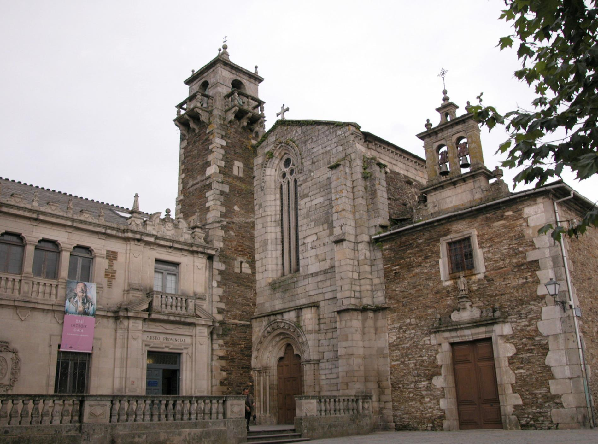
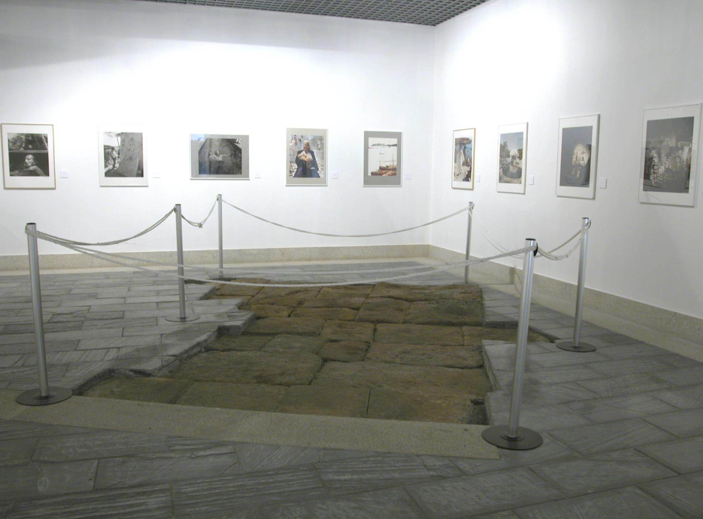
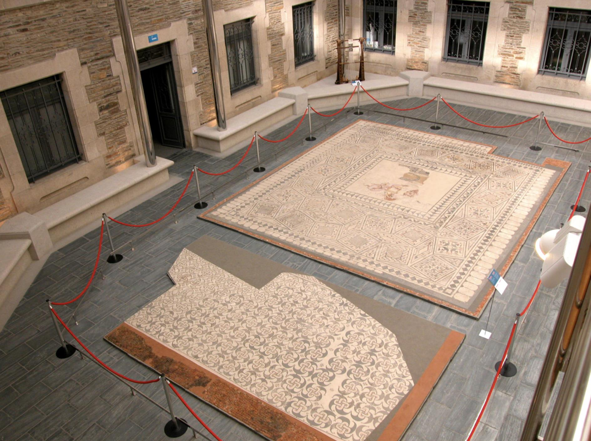
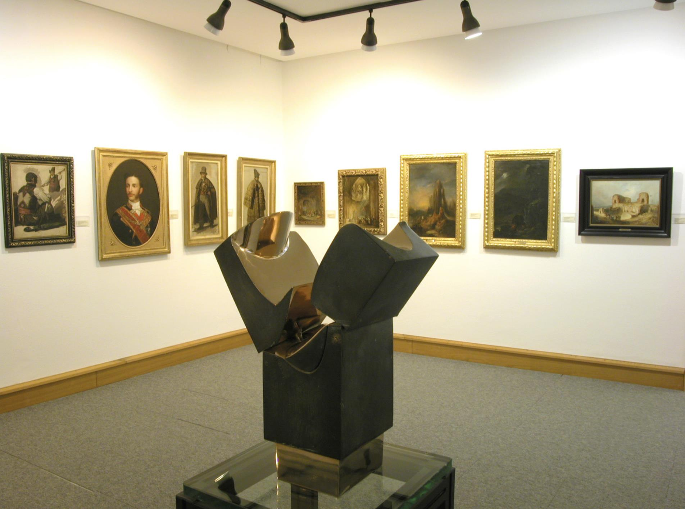
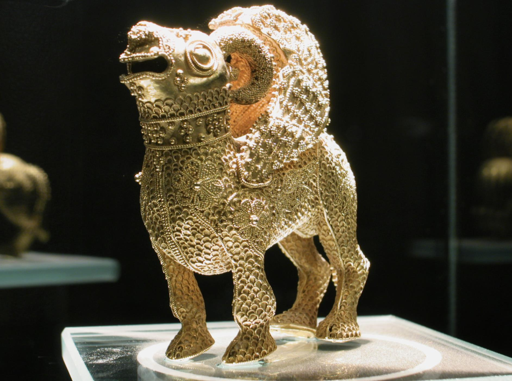
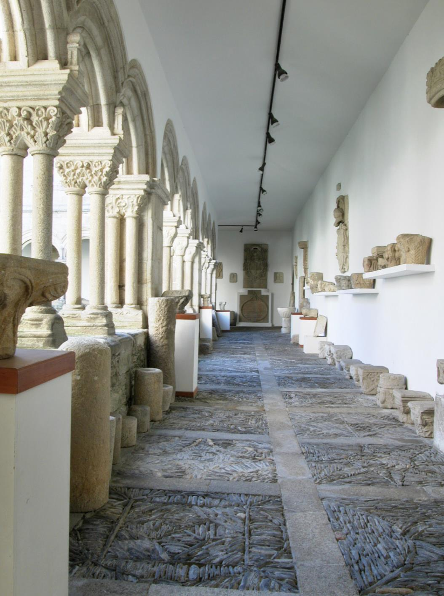
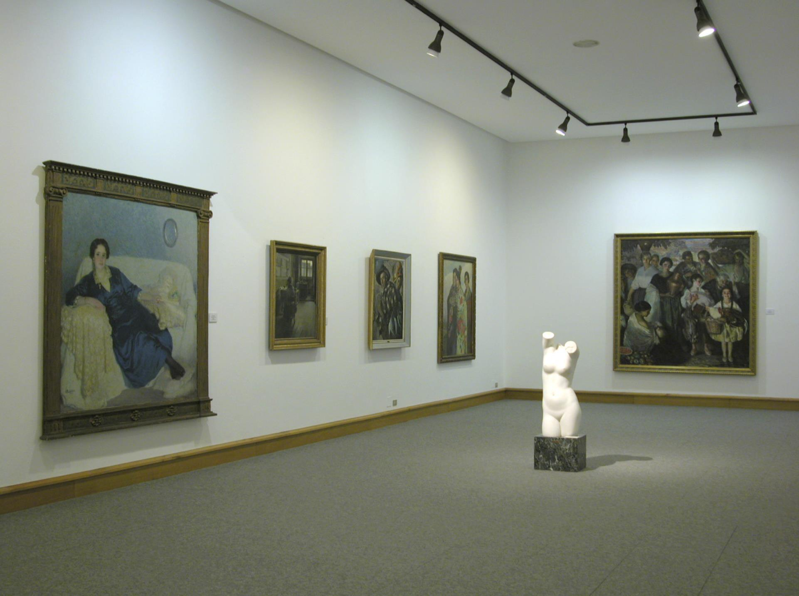

Tania Bagnasco
Me dejó admirada la belleza e historia que guarda este museo. No dejar de visitarlo. Entrada gratuita.
Praza da Soidade, s/n, 27003, Lugo
Creado por la Diputación de Lugo en el año 1932 con la intención de reunir y proteger distintos bienes del patrimonio de la provincia que se encontraban en colecciones particulares e instituciones públicas, el museo ocupó inicialmente una de las salas del Palacio Provincial de San Marcos.
En el año 1957 se traslada a la sede actual, integrada por las dependencias del antiguo convento de San Francisco y un edificio de nueva planta diseñado por el arquitecto Manuel Gómez Román. Desde esa fecha el museo ha sido sometido a diversas ampliaciones.

Me dejó admirada la belleza e historia que guarda este museo. No dejar de visitarlo. Entrada gratuita.
Impresionante. Gratuito y abierto al público. Aluciné con lo grande que es. No os vayáis sin verlo, podréis encontrar un tesoro escondido.







Dirección: Praza da Soidade, s/n, 27003, Lugo.